Activity 2:
Combining infinite sequences – part 1
CLAIM
Pat says that there are more negative and positive whole numbers than just positive whole numbers.
Is Pat right?
Train a robot called Negator that changes the sign of the number. For example, when Negator‘s box looks like
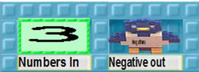
it should give -3 to the bird. Try your robot out with different input numbers.
If you have troubles training the Negator robot then look at the pictorial instructions at the end of this activity sheet.
Connect Negator to the sequence of natural numbers made by the Add 1 robot from Activity 1. Robots are connected by birds and nests.
Will there ever be a positive number on the nest that receives numbers from the Negator robot?
Explain…
Are there any negative integers that won’t be put on the nest if the robots run forever?
Explain…
|
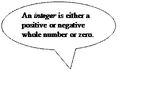 |
|
Train a robot called Merge that turns two sequences into one sequence. For example, when Merge has a box like this
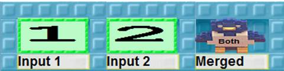
it should give 1 and then 2 to the bird. If you need help see the pictorial instructions at the end.
Give Merge the box
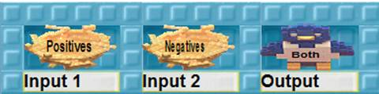
where the first nest will receive all the positive integers and the second nest will receive all the negative integers.
Will every integer come out of Merge were it to run forever?
If any integers are missing on the output nest what could we do?[KK1]
When you ran Merge on the positive and the negative integers you produced all the integers (except 0).
Can you see a way to get all the natural numbers to dance with all the integers?[KK2]
Explain.
What about 0: who is it dancing with?[KK3]
Activity 2, Task A: How to Train the Negator Robot
|
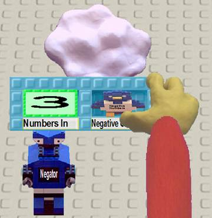
|
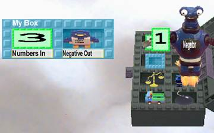
Type |
|||
|
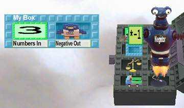
|
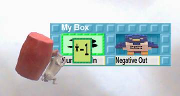 |
|||
|
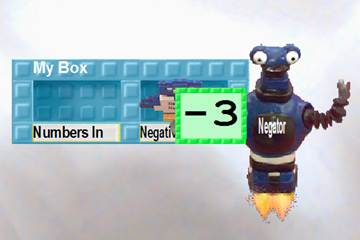 |
|
Activity 2, Task B: How to Train the Merge Robot
|
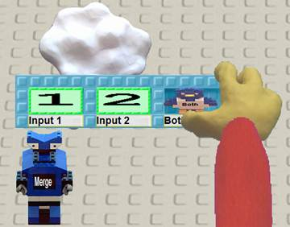
|
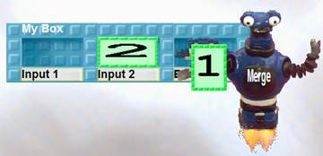 |
|
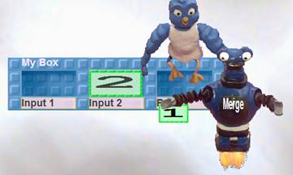
|
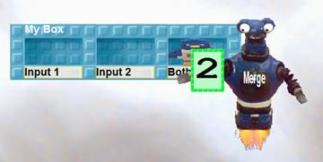 |
[KK1]Zero is the missing number when combining 1, 2, 3 … and -1, -2, -3 …
The children can simply put 0 on the output nest before running this program. Or they could have one of the sequences start with 0 by giving the Add 1 robot an input box with a -1 in it.
[KK2]The output of Merge is a construction of a one-to-one mapping between the natural numbers and the positive and negative integers.
[KK3]Clearly if the set of natural numbers has the same cardinality as the non-zero integers then just adding zero doesn’t change the cardinality. The sequence [0, 1, -1, 2, -2 …] is a representation of a mapping between 1 to 0, 2 to 1, 3 to -1, 4 to 2, and so on.